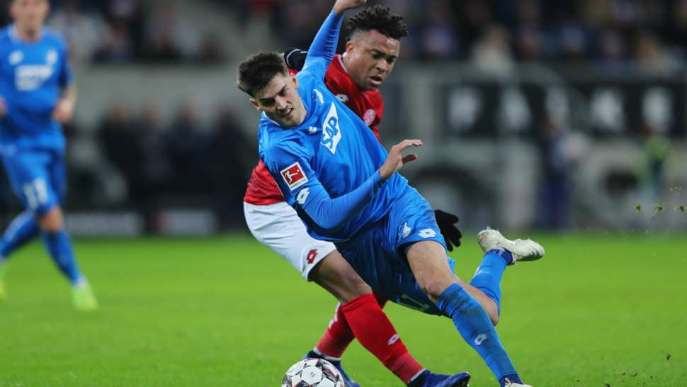
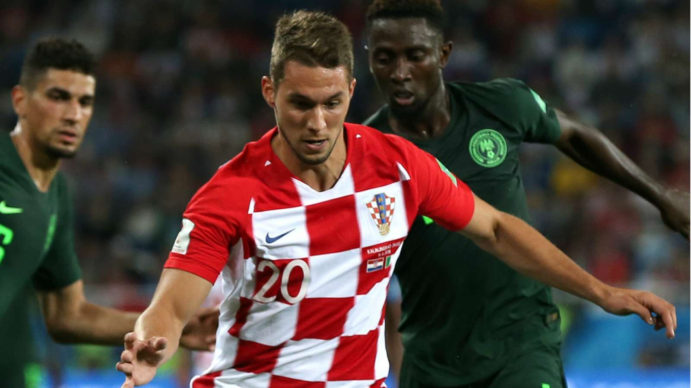
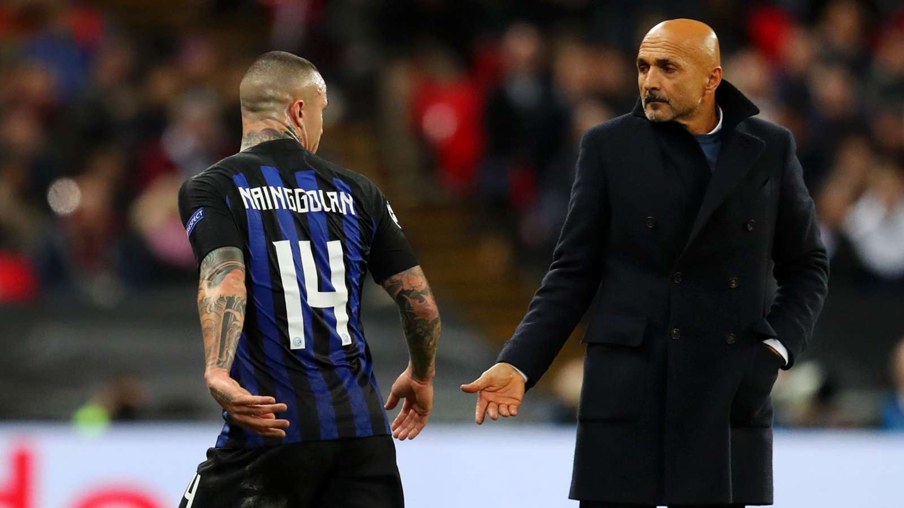
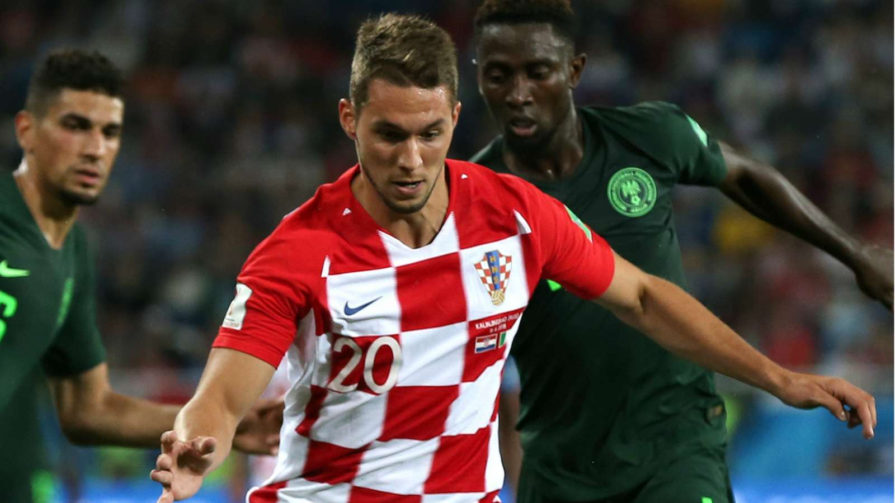
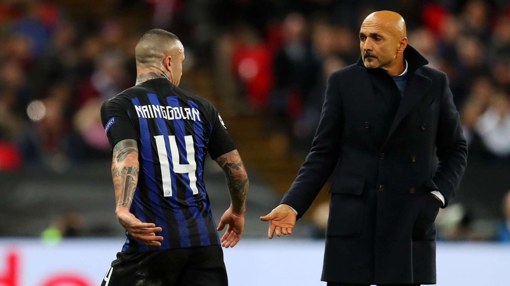

Novosti



Sevilla darovala Barcu, nastavljen nevjerojatan Hoffenheimov niz
Šestica Benfice, golijada Wolfsburga i Augsburga,Brekalo i Kramarić zbog ozljeda nisu igrali.

U Fiorentini je cijela momčad podbacila, pa se ne bi činilo lošim kad bi Marko došao na posudbu u Dinamo
Marko je važan dio našeg napadačkog trojca", rekao je Corvino. No, nekako se čini da bi Marko na proljeće mogao zaigrati u nekoj drugoj sredini, a u nekim kombinacijama spominjao se čak i Dinamo!

Belgijski veznjak i zvijezda Intera Radja Nainggolan opet se ogriješio o disciplinski kodeks kluba te je suspendiran do daljnjeg
Inter ga je suspendirao na neodređeno vrijeme, a s razlozima suspenzije nisu željeli izlaziti u javnost. Pretpostavlja se da je suspendiran zbog kockanja.